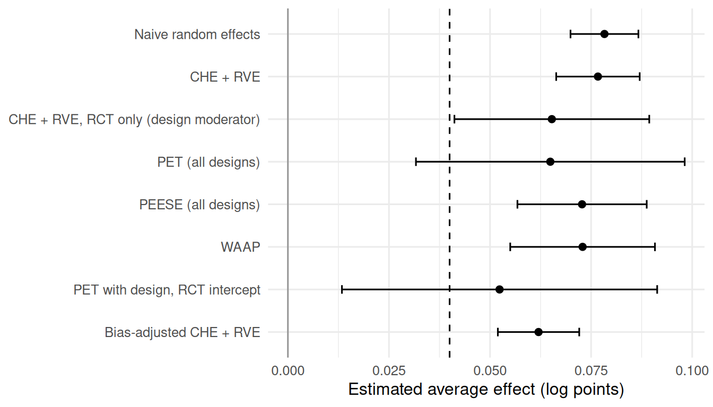
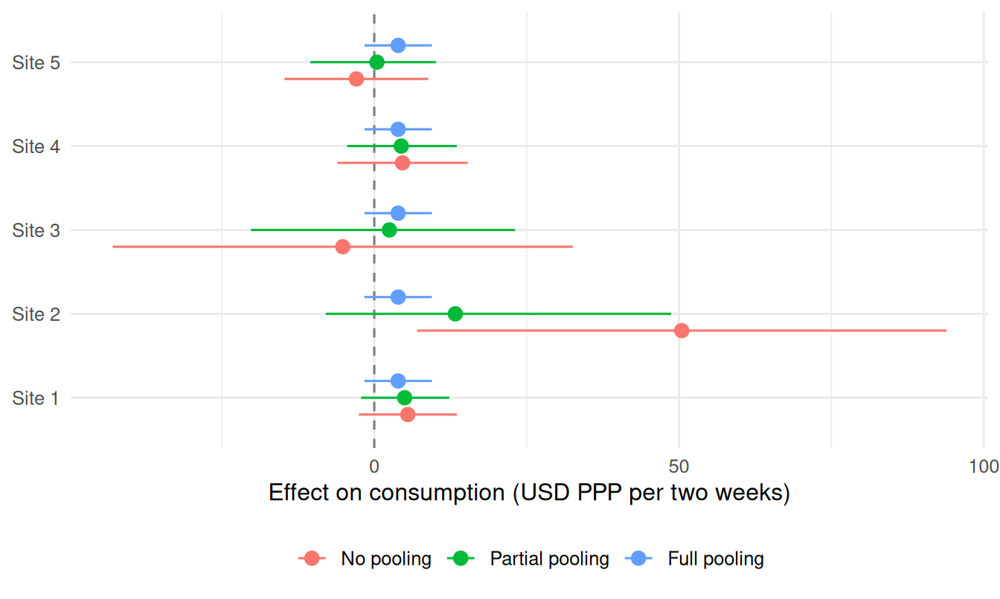

14 Meta-Analysis of Causal Estimates
Economics, management, marketing and policy research increasingly report effects estimated with designs built for causal identification: randomized controlled trials (RCTs) in the field and the lab, difference-in-differences (DiD) and event studies, regression discontinuity (RD), instrumental variables (IV) and synthetic control. A literature on the effect of minimum wages on employment, of loyalty programs on customer spending, of microcredit on household income or of advertising on sales typically mixes all of these. Meta-analysis of such literatures raises problems that the clinical-trial template of earlier chapters does not prepare us for. Different designs identify different causal quantities, standard errors are reported in heterogeneous and sometimes incomplete ways, effect sizes are often regression coefficients on incompatible scales, many estimates come from the same paper, and publication selection is pervasive and design-specific.
This chapter is written for researchers who synthesize such evidence. We first ask what is being pooled, that is, which estimand each design targets and when estimates from different designs can sensibly be combined. We then cover the practicalities of extracting effects and standard errors from regression tables, and the use and misuse of partial correlation coefficients. The middle part of the chapter deals with publication selection as it is studied in economics (FAT-PET-PEESE, WAAP-WLS and selection models), design and identification strength as moderators, and bias-adjusted meta-analysis that combines randomized and non-randomized evidence. A worked example on simulated, design-labelled estimates brings these tools together. The last part turns to generalizability: Bayesian hierarchical aggregation of the microcredit RCTs, pooling factors, and the predictive distribution for a new site.
14.1 What is being pooled?
14.1.1 Estimands by design
In the potential-outcomes framework, unit \(j\) has outcomes \(Y_j(1)\) under treatment and \(Y_j(0)\) without it, and the unit-level effect is \(\Delta_j = Y_j(1) - Y_j(0)\). Different designs identify different averages of \(\Delta_j\).
An RCT with full compliance identifies the average treatment effect (ATE) in the experimental sample, \(E[\Delta_j]\). With one-sided noncompliance, the intention-to-treat effect is the effect of being offered the treatment, which is diluted relative to the effect of receiving it.
An instrumental variables estimator with a binary instrument and a binary treatment, under independence, exclusion, relevance and monotonicity, identifies the local average treatment effect (LATE) for compliers, the units whose treatment status is changed by the instrument (Imbens and Angrist 1994). Two IV studies of the same treatment with different instruments estimate effects for different complier populations, and neither need equal the ATE.
A sharp regression discontinuity design identifies the average effect for units at the cutoff of the running variable, \(E[\Delta_j \mid X_j = c]\) (Imbens and Lemieux 2008; Lee and Lemieux 2010). If effects vary with the running variable, RD estimates from studies with different cutoffs are local effects at different points of the effect function.
Difference-in-differences under parallel trends identifies the average treatment effect on the treated (ATT) for the treated group in the post-treatment periods. With staggered adoption and effects that change over time, the conventional two-way fixed effects (TWFE) regression coefficient is a weighted average of group- and time-specific ATTs in which some weights can be negative, so it need not equal any interpretable ATT (Goodman-Bacon 2021; Chaisemartin and D’Haultfœuille 2020). Estimators such as that of Callaway and Sant’Anna (2021) recover well-defined group-time ATTs and aggregations of them; Roth et al. (2023) review this literature. Event studies report dynamic effects at several horizons, so a meta-analyst must choose a common horizon (for example, the effect one year after treatment) or model the horizon explicitly as in a longitudinal meta-analysis (Chapter 12). Synthetic control (Abadie et al. 2010) estimates the effect for a single treated unit, often a region or a country, and its inference rests on placebo distributions rather than conventional standard errors.
14.1.2 When is pooling meaningful?
A meta-analysis of causal estimates combines numbers that answer questions about different populations and margins. That is not a reason to refuse to pool, but it changes how the pooled result should be read. If the effect is homogeneous, ATE, ATT, LATE and the RD effect coincide, and pooling them estimates the common effect. If the effect is heterogeneous, which is usually the case, the pooled mean is an average of effects for different subpopulations, weighted by precision, and the between-study variance \(\tau^2\) contains genuine variation in effects across populations and margins as well as differences in estimands. Three conditions make pooling defensible. The estimates must be on a common scale (an elasticity, a semi-elasticity in log points, a standardized mean difference, a percentage change), the treatment and outcome must be commensurable across studies, and the estimand should be recorded and examined as a moderator rather than ignored. When these conditions fail, for example when some studies report the effect of a 10% price change and others of a coupon on purchase incidence, separate syntheses are better than one.
Table 14.1 summarizes what each design typically delivers and what should be coded for meta-analysis.
| Design | Estimand | Key identifying assumption | What to code |
|---|---|---|---|
| RCT | ATE (or ITT) in the experimental sample | Randomization, no differential attrition | Compliance, attrition, ITT vs TOT |
| IV | LATE for compliers with the instrument | Exclusion, monotonicity, strong first stage | Instrument type, first-stage F, complier share |
| RD | Local effect at the cutoff | No manipulation of the running variable, continuity | Bandwidth, polynomial order, cutoff location |
| DiD / event study | ATT for treated units, by horizon | Parallel trends, no anticipation | Estimator (TWFE vs heterogeneity-robust), horizon, pre-trends |
| Synthetic control | Effect for one treated unit | Pre-period fit of donor pool | Donor pool, pre-period RMSPE, placebo rank |
14.2 Extracting effect sizes and standard errors
14.2.1 Recovering standard errors
Inverse-variance weighting needs a standard error for every estimate, but regression tables report uncertainty in several forms: a standard error, a \(t\) statistic, a confidence interval, a \(p\) value, or only significance stars. The conversions are elementary but easy to get wrong. If a 95% interval \([L, U]\) is symmetric,
\[ \text{SE} = \frac{U - L}{2\, q_{0.975}}, \]
where \(q_{0.975}\) is the 0.975 quantile of the reference distribution used by the authors: 1.96 for a normal approximation, but \(t_{0.975, G-1}\) when the authors used cluster-robust inference with \(G\) clusters and the small-sample \(t\) correction that is standard in many software packages (Colin Cameron and Miller 2015). From a \(t\) statistic, \(\text{SE} = |b / t|\). From an exact two-sided \(p\) value, \(\text{SE} = |b| / q_{1 - p/2}\). When \(p\) is reported only as an inequality (such as \(p < 0.05\)) or as stars, the bound gives only an upper limit on the standard error, and such estimates should be flagged and examined in a sensitivity analysis. Intervals for ratio measures (odds, risk or hazard ratios) are symmetric only on the log scale, so their limits must be log-transformed before applying the formula, which then gives the standard error of the log ratio.
se_from_ci <- function(lower, upper, level = 0.95, df = Inf) {
(upper - lower) / (2 * qt(1 - (1 - level) / 2, df))
}
se_from_t <- function(b, t) abs(b / t)
se_from_p <- function(b, p, df = Inf) abs(b) / qt(1 - p / 2, df)
reported <- data.frame(
study = c("A: 95% CI, normal", "B: 95% CI, 20 clusters", "C: t statistic",
"D: exact p value", "E: p < 0.05 only"),
b = c(0.080, 0.080, 0.050, 0.120, 0.060),
lower = c(0.020, 0.020, NA, NA, NA), upper = c(0.140, 0.140, NA, NA, NA),
t = c(NA, NA, 2.5, NA, NA), p = c(NA, NA, NA, 0.031, 0.05),
df = c(Inf, 19, NA, Inf, Inf)
)
reported$se <- with(reported, ifelse(!is.na(lower), se_from_ci(lower, upper, df = df),
ifelse(!is.na(t), se_from_t(b, t), se_from_p(b, p, df))))
reported$se_upper_bound <- grepl("only", reported$study)
reported[, c("study", "b", "se", "se_upper_bound")]
#> study b se se_upper_bound
#> 1 A: 95% CI, normal 0.08 0.03061 FALSE
#> 2 B: 95% CI, 20 clusters 0.08 0.02867 FALSE
#> 3 C: t statistic 0.05 0.02000 FALSE
#> 4 D: exact p value 0.12 0.05563 FALSE
#> 5 E: p < 0.05 only 0.06 0.03061 TRUEStudies A and B report the same interval, but B’s authors used a \(t\) distribution with 19 degrees of freedom for 20 clusters, so the implied standard error is 0.0287 rather than 0.0306 under the normal assumption. Applying the normal formula to B would understate its weight slightly. For study E, 0.0306 is only an upper bound on the standard error, because \(p\) could be anywhere below 0.05.
Two further extraction issues are specific to causal designs. First, many papers report several specifications of the same design (with and without controls, different bandwidths, different clusterings of standard errors). The meta-analyst must decide in advance whether to extract the authors’ preferred specification, all specifications, or a rule-based subset; extracting all and modeling the dependence (Section 14.6) avoids the arbitrariness of picking one, but gives more weight to papers that report more robustness checks. Second, coefficients must be converted to a common scale. A coefficient on a log outcome is approximately a proportional change for small values; the exact percentage change is \(100(e^{b} - 1)\). A coefficient on a level outcome can be converted to a semi-elasticity by dividing by the control-group mean, and to a standardized effect by dividing by the outcome standard deviation, with the delta method providing approximate standard errors.
14.2.2 Partial correlation coefficients
When studies report regression coefficients on incompatible scales, economists often convert each coefficient to a partial correlation coefficient (PCC), which can be computed from the \(t\) statistic and the residual degrees of freedom of the regression alone (Stanley and Doucouliagos 2012):
\[ r_p = \frac{t}{\sqrt{t^2 + df}}. \]
Two variance estimators are in common use, \(\widehat{\operatorname{Var}}_1(r_p) = (1 - r_p^2)/df\), which follows from \(\text{SE} = r_p/t\), and \(\widehat{\operatorname{Var}}_2(r_p) = (1 - r_p^2)^2/df\), which follows from the large-sample variance of a correlation coefficient. Aert and Goos (2023) examine the statistical properties of both estimators and give recommendations for applied work. Stanley et al. (2024) show that conventional meta-analyses of PCCs are biased in small samples and propose remedies, including a modified unrestricted weighted least squares estimator and the use of Fisher’s \(z\) transformation. Aloe and Becker (2012) discuss the related semi-partial correlation as an effect size for regression predictors.
The PCC has two drawbacks that matter more than the choice of variance formula. It measures the strength of a conditional association, not the size of an effect, so it cannot answer the question that usually motivates a policy or marketing meta-analysis (“by how much does sales revenue change?”). And its value depends on everything else in the regression. The following simulation shows the same causal effect producing very different PCCs depending on which controls are included.
set.seed(2026)
n <- 500
x <- rnorm(n) # treatment intensity
z <- rnorm(n) # prognostic control, independent of x
y <- 0.2 * x + 1.0 * z + rnorm(n) # true effect of x is 0.2
pcc <- function(fit, term) {
tval <- coef(summary(fit))[term, "t value"]
df <- fit$df.residual
c(b = unname(coef(fit)[term]), t = tval, df = df, pcc = tval / sqrt(tval^2 + df),
se_pcc_1 = sqrt((1 - (tval^2 / (tval^2 + df))) / df))
}
round(rbind(without_control = pcc(lm(y ~ x), "x"),
with_control = pcc(lm(y ~ x + z), "x")), 3)
#> b t df pcc se_pcc_1
#> without_control 0.192 3.217 498 0.143 0.044
#> with_control 0.213 4.802 497 0.211 0.044The coefficient on \(x\) is about 0.2 in both regressions, as it should be, since \(z\) is independent of \(x\). But adding the prognostic control removes residual variance, which raises the \(t\) statistic from 3.2 to 4.8 and the PCC from 0.14 to 0.21. In a meta-analysis, PCCs from studies with rich and sparse control sets are therefore not comparable even when the underlying effect is the same. Notice also that the PCC’s standard error is a function of the PCC itself, which builds a mechanical relation between effect size and precision into funnel-plot-based diagnostics. The recommendation is to prefer a common economic metric (elasticities, semi-elasticities, standardized effects) whenever the primary studies allow it, to use PCCs only when no such metric exists, and then to code the number and type of controls as moderators.
14.3 Publication selection in economics
14.3.1 Evidence of selection
The general methods for publication bias are covered in Chapter 7. Economics has produced some of the most direct evidence on the phenomenon. Using about 50,000 tests published in three leading general-interest journals, Brodeur et al. (2016) found a two-humped distribution of test statistics with missing \(p\) values between 0.25 and 0.10 and an excess just below 0.05, which they interpret as researchers inflating marginal results by choosing significant specifications. Brodeur et al. (2020) extended the analysis to over 21,000 tests in 25 journals and found that the extent of \(p\)-hacking and publication bias varies greatly by method: IV, and to a lesser extent DiD, are particularly problematic, while RCTs and RD designs show less evidence of manipulation. Ioannidis et al. (2017) surveyed 159 meta-analyses in economics and estimated that the median statistical power of the underlying studies is about 18% or less, so that most reported effects are exaggerated. Classic applications include the minimum-wage literature, where meta-regression has found substantial publication selection (Doucouliagos and Stanley 2009).
Two consequences follow for meta-analysis of causal estimates. Selection pressure differs by design, so design moderators can be confounded with selection, and publication-bias corrections should be applied within design or with design-specific terms. And because selection operates on statistical significance, which is a function of both the estimate and its standard error, methods that exploit the relation between estimates and standard errors are natural tools.
14.3.2 FAT-PET-PEESE
The meta-regression approach of Stanley (2007) regresses estimates on their standard errors by weighted least squares with weights \(1/\text{SE}_i^2\):
\[ y_i = \beta_0 + \beta_1 \text{SE}_i + \varepsilon_i, \qquad \operatorname{Var}(\varepsilon_i) = \phi\, \text{SE}_i^2. \]
The funnel asymmetry test (FAT) tests \(\beta_1 = 0\); a positive \(\beta_1\) means that less precise estimates are systematically larger, as selection for significance would produce. The precision-effect test (PET) tests \(\beta_0 = 0\), where \(\beta_0\) is the predicted effect of a hypothetical study with \(\text{SE} = 0\). Because the linear specification is biased toward zero when there is a genuine effect, Stanley and Doucouliagos (2013) recommend a conditional procedure: if PET rejects \(\beta_0 = 0\), re-estimate with the variance instead of the standard error as the regressor,
\[ y_i = \gamma_0 + \gamma_1 \text{SE}_i^2 + \varepsilon_i, \]
the precision-effect estimate with standard error (PEESE), and report \(\hat\gamma_0\) as the corrected effect; otherwise report \(\hat\beta_0\). Note the multiplicative error term \(\phi\,\text{SE}_i^2\): these are WLS regressions with an estimated scale factor, not random-effects meta-regressions, and the unrestricted weighted least squares (UWLS) average \(\hat\beta_0\) from the model without a slope is the corresponding average effect. When estimates are clustered within papers, the standard errors of \(\hat\beta_0\) and \(\hat\beta_1\) should be cluster-robust.
14.3.3 WAAP-WLS
Stanley et al. (2017) proposed the weighted average of the adequately powered (WAAP). First, the UWLS average \(\hat\mu_{\text{UWLS}}\) is computed from all estimates. A study is adequately powered (power of at least 80% for a two-sided 5% test) to detect an effect of that size if \(\text{SE}_i \le |\hat\mu_{\text{UWLS}}| / 2.8\), since \(1.96 + 0.84 = 2.8\). WAAP is the UWLS average computed from the adequately powered estimates only; if fewer than two estimates qualify, UWLS over all estimates is reported instead. Their simulations show that WAAP has smaller bias than the conventional random-effects estimator under selective reporting at essentially no cost when there is none, although notable bias can remain under severe selection or very large heterogeneity (Stanley et al. 2017). Ioannidis et al. (2017) used WAAP to document the extent of exaggeration across economics.
14.3.4 Selection models
Andrews and Kasy (2019) show that the publication probability as a function of the test statistic can be identified from replication studies or, under an independence assumption, from the joint distribution of estimates and standard errors in a meta-analysis, and they propose corrected estimators and confidence sets. Step-function selection models (Chapter 7) with thresholds at the conventional significance levels implement the same idea and are available in metafor through selmodel(). In causal literatures, where reported specifications are themselves selected, these models are a useful complement to the regression-based methods, but they assume that estimates are independent, so they are best applied to one estimate per paper.
14.4 Design and identification strength as moderators
The most important moderators in a meta-analysis of causal estimates are usually features of the research design. Design type (RCT, DiD, RD, IV, observational regression) captures both the estimand and the threats to identification. Finer codes describe the strength of identification within a design: the first-stage \(F\) statistic of an IV estimator (weak instruments bias IV toward OLS), the presence of pre-trend tests and the estimator used in DiD (TWFE versus heterogeneity-robust estimators), bandwidth selection and manipulation tests in RD, attrition and compliance in RCTs, and the source of variation in observational studies. Risk-of-bias tools such as ROBINS-I (Sterne et al. 2016), developed for non-randomized studies of interventions, provide a structured vocabulary for these judgments.
Design moderators should be interpreted with care. A difference between pooled RCT and DiD estimates may reflect bias in one of them, different estimands (ATE in experimental samples versus ATT in the populations that chose to adopt a policy), different populations, or differential publication selection (Brodeur et al. 2020). A meta-regression cannot separate these explanations; it can only quantify the difference and check whether it survives adjustment for observable study characteristics. Because the number of studies per design is often small, moderators should be tested with small-sample corrections such as cluster-robust tests with the CR2 correction and Satterthwaite degrees of freedom (Pustejovsky and Tipton 2021b).
14.5 Bias-adjusted meta-analysis
When randomized and non-randomized estimates are combined, an alternative to treating design as a moderator is to adjust each estimate for its expected bias. Turner et al. (2008) proposed a generic bias model. Write each estimate as
\[ y_i = \theta + \delta_i^{I} + \delta_i^{E} + \varepsilon_i, \qquad \varepsilon_i \sim N(0, v_i), \]
where \(\delta_i^{I}\) is the internal bias arising from the study’s lack of rigor (for example, violations of parallel trends) and \(\delta_i^{E}\) the external bias arising from its lack of relevance to the target question (a different population, setting or version of the treatment). Rather than estimating the biases from the data, which is usually impossible, their distributions are elicited from assessors who read each study: \(\delta_i^{I} \sim N(\mu_i^{I}, \sigma_i^{2I})\) and \(\delta_i^{E} \sim N(\mu_i^{E}, \sigma_i^{2E})\). The bias-adjusted estimate and variance are
\[ y_i^{\text{adj}} = y_i - \mu_i^{I} - \mu_i^{E}, \qquad v_i^{\text{adj}} = v_i + \sigma_i^{2I} + \sigma_i^{2E}, \]
and these replace \((y_i, v_i)\) in a standard meta-analysis. In the original application, adjustment shifted the combined estimate by about 10% and almost tripled its variance, so less rigorous or less relevant studies were effectively downweighted (Turner et al. 2008). The approach is transparent and computationally trivial, and it makes explicit the judgments that a simple design moderator leaves implicit. Its weakness is its dependence on elicitation; different assessors may disagree, and the elicited distributions should be reported and varied. Efthimiou et al. (2017) discuss related approaches for combining randomized and non-randomized evidence in network meta-analysis, including using non-randomized evidence as an informative prior.
14.6 Worked example: a simulated literature of design-labelled estimates
14.6.1 The data
To bring these tools together we simulate a literature, so that the truth is known. Consider the effect of a retail loyalty program on customer spending, measured in log points. Eighty papers each report between one and four estimates using one of four designs. The true average effect in the populations studied by RCTs is 0.04 (about 4%). DiD estimates are biased upward by 0.02 on average (for instance because firms adopt programs when sales are about to rise), IV estimates target compliers whose effects are larger by 0.05, and RD estimates are unbiased for their local population but imprecise. True effects vary between papers (SD 0.015) and between estimates within papers (SD 0.01), and paper sample sizes range from 150 to 20,000. Publication is selective: an estimate that is positive and significant at the 5% level is always published, any other estimate only with probability 0.25.
set.seed(2026)
n_paper <- 80
design_p <- sample(c("RCT", "DiD", "RD", "IV"), n_paper, replace = TRUE,
prob = c(0.30, 0.35, 0.15, 0.20))
shift <- c(RCT = 0, DiD = 0.02, RD = 0, IV = 0.05) # bias or estimand difference
se_mult <- c(RCT = 1.0, DiD = 0.8, RD = 1.8, IV = 2.2)
mu <- 0.04; tau_paper <- 0.015; tau_est <- 0.01
all_est <- do.call(rbind, lapply(seq_len(n_paper), function(j) {
m <- sample(1:4, 1)
N <- round(exp(runif(1, log(150), log(20000))))
u <- rnorm(1, 0, tau_paper)
se <- se_mult[design_p[j]] * 2 / sqrt(N) * exp(rnorm(m, 0, 0.15))
theta <- mu + shift[design_p[j]] + u + rnorm(m, 0, tau_est)
data.frame(paper = j, design = design_p[j], N = N, yi = rnorm(m, theta, se), sei = se)
}))
significant <- all_est$yi / all_est$sei > 1.96
published <- significant | runif(nrow(all_est)) < 0.25
dat_ce <- all_est[published, ]
dat_ce$vi <- dat_ce$sei^2
dat_ce$es_id <- seq_len(nrow(dat_ce))
dat_ce$design <- factor(dat_ce$design, levels = c("RCT", "DiD", "RD", "IV"))
c(estimates_generated = nrow(all_est), published = nrow(dat_ce),
papers = length(unique(dat_ce$paper)))
#> estimates_generated published papers
#> 208 97 54
table(dat_ce$design)
#>
#> RCT DiD RD IV
#> 24 44 10 1914.6.2 Naive and dependence-aware pooling
A conventional random-effects model that treats all estimates as independent is the first, naive benchmark. The correlated and hierarchical effects (CHE) model of Chapter 6 is more appropriate: it assumes a working correlation (here 0.6) between sampling errors of estimates from the same paper, includes paper- and estimate-level random effects, and is combined with cluster-robust variance estimation (Hedges et al. 2010; Pustejovsky and Tipton 2021b).
naive_re <- rma(yi, vi, data = dat_ce)
V_ce <- vcalc(vi, cluster = paper, obs = es_id, rho = 0.6, data = dat_ce)
che <- rma.mv(yi, V_ce, random = ~ 1 | paper / es_id, data = dat_ce)
che_rve <- coef_test(che, vcov = "CR2")
round(rbind(naive_RE = c(coef(naive_re), naive_re$se),
CHE_RVE = c(che_rve$beta, che_rve$SE)), 4)
#> intrcpt
#> naive_RE 0.0783 0.0043
#> CHE_RVE 0.0767 0.0050
round(sqrt(che$sigma2), 4)
#> [1] 0.0000 0.0248Of the 208 estimates generated, 97 from 54 papers were “published”. Both models estimate an average effect of about 0.077, almost twice the true RCT-population effect of 0.04 and well above the average true effect of the published estimates across designs (about 0.06, given the design shifts). The gap is publication selection. The CHE model splits heterogeneity into a between-paper and a within-paper component; here it attributes all of it to the estimate level (SD 0.025), which shows how hard the two components are to separate with one to four estimates per paper. Its robust standard error (0.0050) is larger than the naive one (0.0043) because it acknowledges that estimates from the same paper are not independent pieces of information.
14.6.3 Design as a moderator
che_design <- rma.mv(yi, V_ce, mods = ~ design, random = ~ 1 | paper / es_id,
data = dat_ce)
coef_test(che_design, vcov = "CR2")
#> Alternative hypothesis: two-sided
#> Coef. Estimate SE Null value t-stat d.f. (Satt) p-val (Satt) Sig.
#> intrcpt 0.06529 0.00941 0 6.936 5.07 <0.001 ***
#> designDiD 0.01225 0.01140 0 1.074 9.66 0.3090
#> designRD 0.00286 0.01986 0 0.144 3.18 0.8941
#> designIV 0.03438 0.01389 0 2.475 6.54 0.0449 *
Wald_test(che_design, constraints = constrain_zero(2:4), vcov = "CR2")
#> test Fstat df_num df_denom p_val sig
#> HTZ 1.67 3 6.2 0.268The intercept is the average for RCTs, and the coefficients are the differences of the other designs from RCTs. IV estimates are larger by 0.034 (\(p = 0.045\)), close to the 0.05 shift built into the simulation, while the DiD (0.012) and RD (0.003) differences are small and imprecise. The Satterthwaite degrees of freedom are small for several coefficients (3.2 for RD), which reflects how few papers use each design, and the joint robust Wald test of equal means across designs is not significant (\(F = 1.67\), \(p = 0.27\)). A design moderator is thus a low-powered tool in a literature of this size. Even the RCT intercept, 0.065, overstates the truth of 0.04, because selection also inflated the published RCT estimates.
14.6.4 Correcting for publication selection
We now apply PET, PEESE and WAAP. Because these are WLS regressions with clustered estimates, we use cluster-robust (CR2) standard errors by paper.
pet <- lm(yi ~ sei, weights = 1 / vi, data = dat_ce)
peese <- lm(yi ~ vi, weights = 1 / vi, data = dat_ce)
coef_test(pet, vcov = "CR2", cluster = dat_ce$paper)
#> Alternative hypothesis: two-sided
#> Coef. Estimate SE Null value t-stat d.f. (Satt) p-val (Satt) Sig.
#> (Intercept) 0.0649 0.0117 0 5.57 3.74 0.00617 **
#> sei 0.5008 0.3173 0 1.58 3.51 0.19946
coef_test(peese, vcov = "CR2", cluster = dat_ce$paper)
#> Alternative hypothesis: two-sided
#> Coef. Estimate SE Null value t-stat d.f. (Satt) p-val (Satt) Sig.
#> (Intercept) 0.0728 0.00648 0 11.24 5.78 <0.001 ***
#> vi 4.6206 2.02227 0 2.28 5.81 0.0638 .
uwls <- lm(yi ~ 1, weights = 1 / vi, data = dat_ce)
mu_uwls <- unname(coef(uwls))
powered <- dat_ce$sei <= abs(mu_uwls) / 2.8
c(UWLS = mu_uwls, n_adequately_powered = sum(powered), share = mean(powered))
#> UWLS n_adequately_powered share
#> 0.07606 32.00000 0.32990
waap <- lm(yi ~ 1, weights = 1 / vi, data = dat_ce[powered, ])
coef_test(waap, vcov = "CR2", cluster = dat_ce$paper[powered])
#> Alternative hypothesis: two-sided
#> Coef. Estimate SE Null value t-stat d.f. (Satt) p-val (Satt) Sig.
#> (Intercept) 0.0729 0.00722 0 10.1 5.7 <0.001 ***The FAT slope on the standard error is positive (0.50), the expected sign under selection for significance, but with robust standard errors and about 3.5 degrees of freedom it is far from significant (\(p = 0.20\)). Funnel asymmetry tests have low power when the precision of the studies varies little or when a few papers dominate the weights. PET (0.065) and PEESE (0.073) both pull the average down from the naive 0.078. The UWLS average is 0.076, and 32 of the 97 estimates (33%) are adequately powered to detect an effect of that size; WAAP, computed from these alone, is 0.073. Because the overall average mixes designs with different true means, these corrections are not yet aimed at a well-defined target. Adding design to the PET regression asks what each design would report at infinite precision:
pet_design <- lm(yi ~ sei + design, weights = 1 / vi, data = dat_ce)
coef_test(pet_design, vcov = "CR2", cluster = dat_ce$paper)
#> Alternative hypothesis: two-sided
#> Coef. Estimate SE Null value t-stat d.f. (Satt) p-val (Satt) Sig.
#> (Intercept) 0.05236 0.0103 0 5.096 2.31 0.0268 *
#> sei 0.42390 0.3107 0 1.364 3.83 0.2471
#> designDiD 0.01737 0.0112 0 1.551 3.88 0.1980
#> designRD -0.00604 0.0309 0 -0.196 2.12 0.8621
#> designIV 0.03641 0.0149 0 2.452 4.50 0.0633 .The intercept, 0.052 (SE 0.010), is now the selection-corrected estimate for RCTs. It is much closer to the true value of 0.04 than the uncorrected RCT mean (0.065), although some upward bias remains: when true effects vary, selection filters out even very precise estimates whose true effects happen to be small, and no correction based on the relation between estimates and standard errors can fully undo that. The Satterthwaite degrees of freedom (2.3 for the intercept) show that a few large, precise papers carry most of the information. This is typical of economics meta-analyses and a reason to report several correction methods side by side rather than a single “corrected” number (Irsova et al. 2023).
14.6.5 Bias-adjusted analysis
Finally, suppose that a panel of assessors, after reading the papers, elicited the following bias distributions relative to the target estimand (the ATE in the population of retailers considering a program): no bias for RCTs; internal bias with mean 0.02 and SD 0.02 for DiD; for IV, a mean shift of 0.03 with SD 0.04, reflecting both possible exclusion violations and the difference between complier and population effects; and for RD, no mean bias but an external-bias SD of 0.02 because the local population at the cutoff may differ from the target. The adjusted estimates subtract the bias means, and the bias variances are added to the sampling variances. Because all estimates from a paper share the same design and data, we treat the bias as common to all estimates within a paper, which adds the bias variance to every within-paper covariance as well.
bias_mean <- c(RCT = 0, DiD = 0.02, RD = 0, IV = 0.03)
bias_sd <- c(RCT = 0, DiD = 0.02, RD = 0.02, IV = 0.04)
d <- as.character(dat_ce$design)
dat_ce$yi_adj <- dat_ce$yi - bias_mean[d]
Z <- outer(dat_ce$paper, dat_ce$paper, "==") # same-paper indicator
B <- Z * outer(bias_sd[d], bias_sd[d]) # shared bias covariance
che_adj <- rma.mv(yi_adj, V_ce + B, random = ~ 1 | paper / es_id, data = dat_ce)
adj_rve <- coef_test(che_adj, vcov = "CR2")
round(rbind(CHE_unadjusted = c(che_rve$beta, che_rve$SE),
CHE_bias_adjusted = c(adj_rve$beta, adj_rve$SE)), 4)
#> [,1] [,2]
#> CHE_unadjusted 0.0767 0.0050
#> CHE_bias_adjusted 0.0620 0.0049The bias-adjusted average is 0.062 instead of 0.077, because the DiD and IV estimates have been shifted down, and the less rigorous or less relevant estimates receive less weight because their variances now include the bias uncertainty. The adjustment does nothing about publication selection, which was not part of the elicitation, so in a real application bias modeling and selection correction would both be reported. Figure 14.1 collects the estimates from all methods.
ci_row <- function(label, est, se, df = Inf) {
data.frame(method = label, est = est, lo = est - qt(0.975, df) * se,
hi = est + qt(0.975, df) * se)
}
pet_ct <- coef_test(pet, vcov = "CR2", cluster = dat_ce$paper)
peese_ct <- coef_test(peese, vcov = "CR2", cluster = dat_ce$paper)
waap_ct <- coef_test(waap, vcov = "CR2", cluster = dat_ce$paper[powered])
petd_ct <- coef_test(pet_design, vcov = "CR2", cluster = dat_ce$paper)
desg_ct <- coef_test(che_design, vcov = "CR2")
summary_df <- rbind(
ci_row("Naive random effects", coef(naive_re), naive_re$se),
ci_row("CHE + RVE", che_rve$beta, che_rve$SE, che_rve$df_Satt),
ci_row("CHE + RVE, RCT only (design moderator)", desg_ct$beta[1], desg_ct$SE[1], desg_ct$df_Satt[1]),
ci_row("PET (all designs)", pet_ct$beta[1], pet_ct$SE[1], pet_ct$df_Satt[1]),
ci_row("PEESE (all designs)", peese_ct$beta[1], peese_ct$SE[1], peese_ct$df_Satt[1]),
ci_row("WAAP", waap_ct$beta[1], waap_ct$SE[1], waap_ct$df_Satt[1]),
ci_row("PET with design, RCT intercept", petd_ct$beta[1], petd_ct$SE[1], petd_ct$df_Satt[1]),
ci_row("Bias-adjusted CHE + RVE", adj_rve$beta, adj_rve$SE, adj_rve$df_Satt)
)
summary_df$method <- factor(summary_df$method, levels = rev(summary_df$method))
ggplot(summary_df, aes(est, method)) +
geom_vline(xintercept = 0.04, linetype = "dashed") +
geom_vline(xintercept = 0, colour = "grey60") +
geom_errorbarh(aes(xmin = lo, xmax = hi), height = 0.2) +
geom_point(size = 2) +
labs(x = "Estimated average effect (log points)", y = NULL)
Figure 14.1: Average effect of the (simulated) loyalty program under different estimators. The dashed line marks the true average effect in RCT populations (0.04). Intervals are 95% confidence intervals using cluster-robust (CR2) standard errors where estimates are clustered within papers.
The lesson of the simulation is not that one method wins. It is that, in a literature with design heterogeneity and selective publication, the naive average can be badly misleading, that the different corrections address different problems (dependence, design differences, selection, bias), and that their answers should be reported together with a clear statement of the target estimand.
14.7 Heterogeneity and generalizability across sites
14.7.1 External validity as a meta-analytic question
A single well-identified study answers a question about one population, place and time. Whether its result generalizes is a question about heterogeneity across sites, and meta-analysis is the natural tool for it. Vivalt (2020) assembled a large database of impact evaluations in development economics and found a large amount of effect heterogeneity. Effect sizes varied systematically with study characteristics: government-implemented programs had smaller effects than programs implemented by academics or non-governmental organizations, even controlling for sample size. Accounting for study characteristics reduced the heterogeneity appreciably. Allcott (2015) documented site selection bias: the sites that choose to host an evaluation can differ systematically from the sites where a program is later scaled, so that even a meta-analysis of many RCTs may not predict effects in new sites. For a policymaker, the relevant quantity is often the predictive distribution of the effect in a new site, not the mean of the sites studied so far.
14.7.2 Bayesian hierarchical aggregation of the microcredit trials
Meager (2019) jointly analyzed seven randomized evaluations of expanded access to microcredit, six of which were published together in one journal issue (Banerjee et al. 2015), using Bayesian hierarchical models. She concluded that the impact on household business and consumption variables is unlikely to be transformative and may be negligible, that true heterogeneity across sites is moderate, with approximately 60% of the observed variation attributable to sampling error, and that external validity is therefore reasonable. We work with site-level summaries of household consumption (in USD PPP per two weeks) for the five sites with complete consumption data in the simplified version of these trials distributed with the baggr R package (microcredit_simplified). The estimates below were computed from that individual-level file as the difference in mean consumption between treated and control households and its standard error. The sites are identified only by number in that file, and we keep that labeling.
The Rubin model (Rubin 1981) is the normal-normal hierarchical model of Chapter 9: site effects \(\theta_k \sim N(\mu, \tau^2)\), observed effects \(\hat\theta_k \sim N(\theta_k, \text{SE}_k^2)\).
mc_sites <- data.frame(
site = paste("Site", 1:5),
tau = c(5.51, 50.45, -5.17, 4.64, -2.94), # treatment - control mean
se.tau = c(4.10, 22.16, 19.27, 5.45, 6.02),
n.control = c(8298, 260, 444, 3248, 2771),
n.treated = c(8262, 701, 551, 3579, 2716)
)
mc_sites
#> site tau se.tau n.control n.treated
#> 1 Site 1 5.51 4.10 8298 8262
#> 2 Site 2 50.45 22.16 260 701
#> 3 Site 3 -5.17 19.27 444 551
#> 4 Site 4 4.64 5.45 3248 3579
#> 5 Site 5 -2.94 6.02 2771 2716The tau column is the difference in mean consumption between treatment and control households, and se.tau its standard error. Site 2 has a large point estimate (50) but also a large standard error, while the largest site (Site 1, more than 16,000 households) estimates an effect of 5.5 with standard error 4.1. We fit the partial-pooling model with bayesmeta (Röver 2020), which computes the posterior by direct numerical integration rather than MCMC, so there are no convergence diagnostics to check. The priors are weakly informative: a normal prior with SD 100 on \(\mu\) and a half-normal prior with scale 50 on \(\tau\), both wide relative to the scale of the site estimates. With only five sites, the posterior for \(\tau\) is sensitive to its prior.
mc_fit <- bayesmeta(y = mc_sites$tau, sigma = mc_sites$se.tau,
labels = mc_sites$site,
mu.prior.mean = 0, mu.prior.sd = 100,
tau.prior = function(t) dhalfnormal(t, scale = 50))
round(mc_fit$summary, 2)
#> tau mu theta
#> mode 0.00 4.04 3.94
#> median 6.99 4.48 4.30
#> mean 10.55 5.09 5.09
#> sd 11.06 7.94 17.20
#> 95% lower 0.00 -9.84 -29.12
#> 95% upper 32.52 22.56 42.42The hypermean \(\mu\) has posterior mean 5.1 dollars per two weeks (95% interval -9.8 to 22.6), a small effect relative to control-group consumption of roughly 200 to 330, and consistent with no effect. The heterogeneity SD \(\tau\) has posterior mean 10.5, but its interval (0 to 32.5) shows that the data barely constrain it.
The pooling factor for site \(k\) is \(\omega_k = \text{SE}_k^2 / (\text{SE}_k^2 + \tau^2)\), the share of the site’s estimate that is replaced by the hypermean. Its posterior mean integrates this ratio over the posterior of \(\tau\):
pooling <- sapply(mc_sites$se.tau, function(s)
integrate(function(t) s^2 / (s^2 + t^2) * mc_fit$dposterior(tau = t),
lower = 0, upper = Inf)$value)
data.frame(site = mc_sites$site, pooling = round(pooling, 2),
shrunken = round(mc_fit$theta["mean", ], 1))
#> site pooling shrunken
#> Site 1 Site 1 0.37 5.0
#> Site 2 Site 2 0.81 13.3
#> Site 3 Site 3 0.78 2.5
#> Site 4 Site 4 0.45 4.4
#> Site 5 Site 5 0.47 0.4Imprecise sites (2 and 3) are pooled heavily toward the mean (about 0.8), while the precise Site 1 keeps more of its own estimate (pooling of about 0.37). Site 2’s estimate of 50 shrinks to a posterior mean of about 13. Averaged over sites, the pooling factor is 0.58, so a little more than half of each estimate is replaced by the hypermean, broadly in line with Meager’s conclusion that about 60% of the observed variation in the full data is sampling error.
The predictive distribution for a new site integrates over the uncertainty in \(\mu\) and \(\tau\):
round(mc_fit$qposterior(theta.p = c(0.025, 0.10, 0.50, 0.90, 0.975), predict = TRUE), 1)
#> [1] -28.3 -9.0 4.3 20.6 43.2
1 - mc_fit$pposterior(theta = 0, predict = TRUE)
#> [1] 0.7245The 95% predictive interval for the effect in a new site runs from about \(-28\) to \(+43\), far wider than the interval for \(\mu\), and the posterior probability that the effect in a new site is positive is about 0.72. For a policymaker deciding whether to expand microcredit to a new region, that predictive distribution, not the mean, is the relevant summary. Figure 14.2 compares no pooling, partial pooling and full pooling.
mc_common <- rma(tau, sei = se.tau, data = mc_sites, method = "EE")
plot_df <- rbind(
data.frame(site = mc_sites$site, type = "No pooling", est = mc_sites$tau,
lo = mc_sites$tau - 1.96 * mc_sites$se.tau,
hi = mc_sites$tau + 1.96 * mc_sites$se.tau),
data.frame(site = mc_sites$site, type = "Partial pooling",
est = mc_fit$theta["mean", ], lo = mc_fit$theta["95% lower", ],
hi = mc_fit$theta["95% upper", ]),
data.frame(site = mc_sites$site, type = "Full pooling", est = mc_common$b[1],
lo = mc_common$ci.lb, hi = mc_common$ci.ub)
)
plot_df$type <- factor(plot_df$type, c("No pooling", "Partial pooling", "Full pooling"))
ggplot(plot_df, aes(x = est, y = site, colour = type)) +
geom_vline(xintercept = 0, linetype = 2, colour = "grey50") +
geom_pointrange(aes(xmin = lo, xmax = hi), position = position_dodge(width = 0.6)) +
labs(x = "Effect on consumption (USD PPP per two weeks)", y = NULL, colour = NULL) +
theme(legend.position = "bottom")
Figure 14.2: Treatment effects of microcredit on household consumption (USD PPP per two weeks) by site under no pooling (separate estimates), partial pooling (Bayesian hierarchical model) and full pooling (common effect), with 95% intervals. Site-level data derived from the simplified microcredit trial data analyzed by Meager (2019).
It is instructive to compare the Bayesian analysis with a frequentist random-effects model of the same five estimates.
rma(tau, sei = se.tau, data = mc_sites, method = "REML", test = "knha")
#>
#> Random-Effects Model (k = 5; tau^2 estimator: REML)
#>
#> tau^2 (estimated amount of total heterogeneity): 0.0000 (SE = 25.6951)
#> tau (square root of estimated tau^2 value): 0.0005
#> I^2 (total heterogeneity / total variability): 0.00%
#> H^2 (total variability / sampling variability): 1.00
#>
#> Test for Heterogeneity:
#> Q(df = 4) = 6.0978, p-val = 0.1920
#>
#> Model Results:
#>
#> estimate se tval df pval ci.lb ci.ub
#> 3.9185 3.4855 1.1242 4 0.3238 -5.7589 13.5959
#>
#> ---
#> Signif. codes: 0 '***' 0.001 '**' 0.01 '*' 0.05 '.' 0.1 ' ' 1REML estimates \(\tau^2 = 0\), so the frequentist model collapses to a common-effect model and implies perfect generalizability, while the Bayesian model averages over the whole posterior of \(\tau\) (whose mode is also zero, but whose mean is about 10) and so carries the uncertainty about heterogeneity into the predictive distribution. With five sites, neither answer should be over-interpreted; the point is that the predictive question depends heavily on how \(\tau\) is estimated or what prior is placed on it, and that conclusions should be checked against alternative priors (Chapter 9). Meager (2022) extends the approach to quantile treatment effects, which capture heterogeneity within sites as well as between them.
14.8 Reporting: the MAER-Net guidelines
The Meta-Analysis of Economics Research Network (MAER-Net) has published reporting guidelines for meta-analyses in economics, updated in Havránek et al. (2020). They complement PRISMA (Chapter 15) with items tailored to the way economics meta-analyses are done. Broadly, authors are asked to document the search and inclusion criteria, how estimates and their standard errors were coded (including whether all estimates or a subset were taken from each paper), the transformation to a common effect size metric, the methods used to assess publication selection, the modeling of heterogeneity with study, data and method characteristics as moderators, and robustness checks, and to make the data and code available. Readers should consult the guideline itself for the full checklist. Irsova et al. (2023) provide a practitioner’s guide that walks through these steps for social science research.
For a meta-analysis of causal estimates, we suggest adding four elements to these requirements. First, a table that maps each design to the estimand it identifies and to the coding of identification strength. Second, the rule for selecting among multiple specifications within a paper and a sensitivity analysis to that rule. Third, results stratified by design or with design moderators, with selection corrections reported within design when the data allow. Fourth, when the purpose is policy, a predictive distribution or prediction interval for the effect in a new setting.
14.9 Common pitfalls
Pooling incompatible estimands without comment. Mixing ATEs, LATEs, local RD effects and TWFE coefficients is common and sometimes unavoidable, but the pooled number is then a weighted average of different quantities. Code the estimand and examine it.
Using the wrong reference distribution to recover standard errors. Standard errors recovered from confidence intervals or \(p\) values must use the distribution the authors used. Cluster-robust inference with few clusters typically uses a \(t\) distribution.
Treating PCCs as effect sizes. Partial correlations depend on the control set and degrees of freedom and do not measure the economic size of an effect. Prefer elasticities or other common metrics.
Ignoring within-paper dependence. Papers in economics often report dozens of specifications. Treating them as independent overweights prolific papers and understates uncertainty. Use CHE models with robust variance estimation, and report sensitivity to the selection rule.
Over-trusting a single bias correction. PET-PEESE, WAAP and selection models make different assumptions and can disagree, especially with high heterogeneity. Report several, and do not treat any one as the truth.
Confusing design differences with bias. A larger average IV estimate may reflect a larger complier effect rather than bias. Bias-adjusted meta-analysis makes such judgments explicit rather than hiding them in a moderator coefficient.
Equating the mean effect with the effect in a new site. With substantial heterogeneity, the predictive distribution can be much wider than the confidence interval for the mean and can include effects of the opposite sign.
14.10 Key takeaways
Causal designs identify different estimands: RCTs the ATE in the experimental sample, IV a LATE for compliers, RD a local effect at the cutoff, DiD an ATT that conventional TWFE regressions may weight oddly under staggered adoption, synthetic control the effect for one unit. Pooling them is meaningful on a common scale and with the estimand coded as a moderator. Standard errors must be recovered with the reference distribution the authors used, and partial correlations should be a last resort because they depend on the control set. Publication selection is well documented in economics and varies by design, so selection corrections (FAT-PET-PEESE, WAAP-WLS, selection models) should be reported together and, where possible, within design. Multiple estimates per paper call for CHE models with robust variance estimation. Bias-adjusted meta-analysis combines randomized and non-randomized estimates by making elicited bias distributions explicit. Finally, the generalizability of causal findings is a question about heterogeneity across sites, and Bayesian hierarchical models with pooling factors and predictive distributions, as in the microcredit analysis, answer it more directly than the pooled mean.
14.11 Further reading
Stanley and Doucouliagos (2012) is the standard text on meta-regression analysis in economics and business, and Irsova et al. (2023) is an up-to-date practitioner’s guide; the MAER-Net guidelines are Havránek et al. (2020). On publication selection in economics, read Brodeur et al. (2016), Brodeur et al. (2020), Ioannidis et al. (2017) and Andrews and Kasy (2019), and for the estimators Stanley (2007), Stanley and Doucouliagos (2013) and Stanley et al. (2017). For partial correlations, see Aert and Goos (2023) and Stanley et al. (2024). Turner et al. (2008) is the key reference for bias modeling. On generalizability, Meager (2019) and Meager (2022) show what Bayesian hierarchical models can do with a small number of RCTs, and Vivalt (2020) and Allcott (2015) document heterogeneity and site selection in program evaluation. For the designs themselves, Imbens and Angrist (1994), Imbens and Lemieux (2008), Roth et al. (2023) and Abadie et al. (2010) are good starting points.